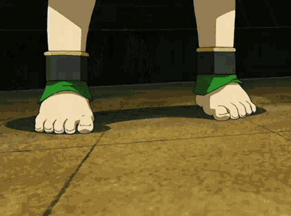

Toph Beifong
Toph was born in 88 AG as the only child of the wealthy Beifong family from Gaoling. Born blind, she was sheltered by her parents, who believed her blindness made her fragile and incapable of looking after herself. They went to extreme measures to protect her, including hiding her existence from the rest of the world, which resulted in very few people knowing that the Beifong family even had a daughter. Her parents expected their daughter to be well-mannered and proper due to their noble status in Earth Kingdom society, something with which Toph secretly disagreed, causing her to resent her parents' treatment.
One day when she was around five years old, Toph ran away from home and hid in a cave inhabited by badgermoles. Badgermoles were the first earthbenders and according to Toph, she felt that she and the creatures understood each other as they were both blind. She learned earthbending by imitating their movements. In this way, she learned to "see" through the use of her earthbending, detecting people and other objects through their vibrations, which she sensed through the ground via her bare feet. Her blindness and patience helped her to develop a keen sense of hearing. Toph would continue to sporadically run away from home to find refuge in the Foggy Swamp due to its close proximity to her hometown.
Lao Beifong later hired the earthbender teacher, Master Yu, to instruct her. Acting upon the orders of Toph's father, he did not teach her anything other than beginner's moves, unaware that she had already achieved mastery in the art. She became such a formidable bender that she secretly entered underground earthbending tournaments as the Blind Bandit, and was successful to the point where she became the champion of Earth Rumble more than once. After meeting Aang when she was 12 years old, Toph soon ran away in order to teach him earthbending, but also to escape her parents, who never granted her any real freedom
Earthbending Sonar
While Toph can't see with her eyes, she learned to use earthbending much like a sonar. While on solid ground, she can detect things that are on or below ground.
Metalbending
Toph learns to detect traces of earth in metal and becomes the first metalbender.
Lie detector
Toph can tell when most people are lying by monitoring their heartrate with earthbending.
Sand, flying enemies, needing to be up in the air or in deep water
None. Too cool to need any